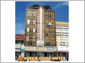
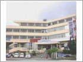
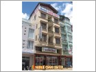
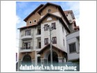
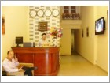
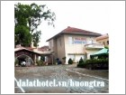

| Anh Đào Hotel |
|
Hùng Phong Hotel |
|
|  |
Khách sạn Anh Đào là khách sạn đạt tiêu chuẩn do Sở Du Lịch Thương Mại chứng nhận. |
 |
Khách sạn Hùng Phong là khách sạn đạt tiêu chuẩn 2 sao do Sở Du Lịch Thương Mại chứng nhận. |
| Linh Huy Hotel |
|
Villa hotel Hương Trà |
|
|  |
Khách sạn Linh Huy là khách sạn đạt tiêu chuẩn 2 sao do Sở Du Lịch Thương Mại chứng nhận. |
 |
Khách sạn Villa hotel Hương Trà là khách sạn đạt tiêu chuẩn 2 sao do Sở Du Lịch Thương Mại chứng nhận. |
| Khách sạn TuLip |
|
Khách sạn Red Sun |
|
|  |
Khách sạn TuLip là khách sạn đạt tiêu chuẩn do Sở Du Lịch Thương Mại chứng nhận. |
 |
Khách sạn Red Sun là khách sạn đạt tiêu chuẩn 2 sao do Sở Du Lịch Thương Mại chứng nhận. |